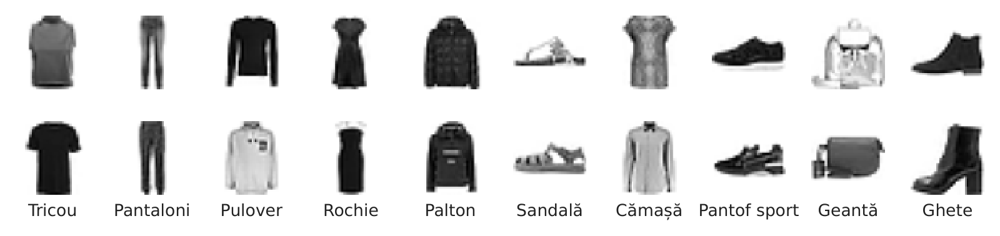

O fotografie de produs este o matrice de numere
Fiecare imagine Fashion-MNIST este o matrice de 28 × 28 de niveluri de gri, provenită dintr-o fotografie de produs din catalogul online Zalando, iar sarcina este de a o asocia unuia dintre cele zece tipuri de produse. Păstrăm 50 000 de imagini pentru antrenare, 10 000 pentru validare (oprirea timpurie) și 10 000 pentru testul final, folosit o singură dată.

Două imagini de antrenare pentru fiecare dintre cele zece tipuri de produse.
Sursa: Fashion-MNIST, Zalando Research (Xiao et al., 2017). Date: 60.000 de imagini de antrenare, 28 x 28 niveluri de gri.
În practică: un magazin online etichetează zilnic mii de fotografii noi de produse; clasificatorul stabilește categoria, iar un operator verifică doar cazurile îndoielnice.